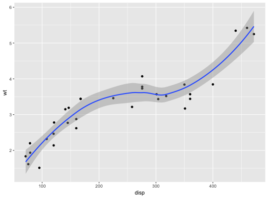
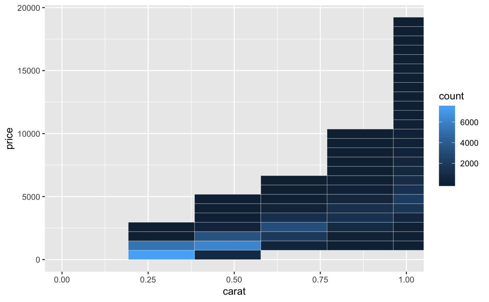
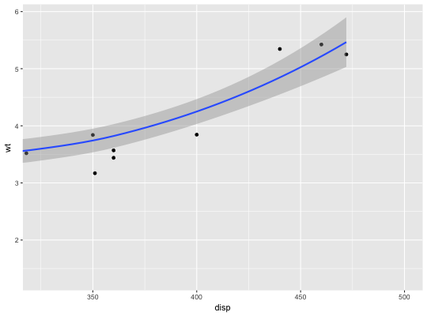
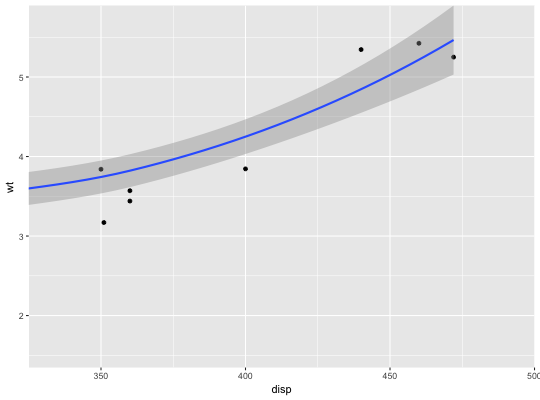
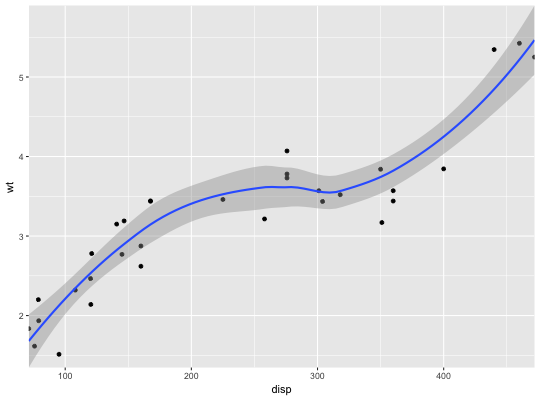
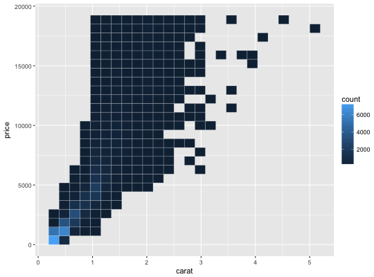
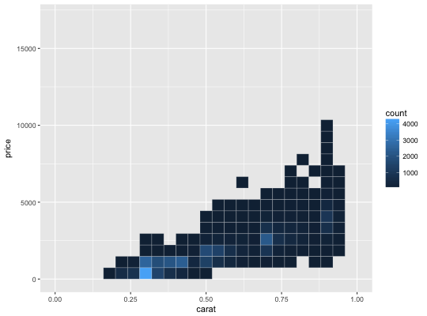
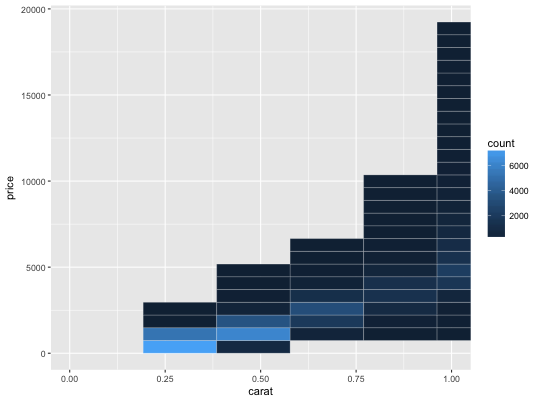

The Cartesian coordinate system is the most familiar, and common, type of coordinate system. Setting limits on the coordinate system will zoom the plot (like you're looking at it with a magnifying glass), and will not change the underlying data like setting limits on a scale will.
coord_cartesian(xlim = NULL, ylim = NULL, expand = TRUE)
TRUE, the default, adds a small expansion factor to
the limits to ensure that data and axes don't overlap. If FALSE,
limits are taken exactly from the data or xlim/ylim.# There are two ways of zooming the plot display: with scales or # with coordinate systems. They work in two rather different ways. p <- ggplot(mtcars, aes(disp, wt)) + geom_point() + geom_smooth() p`geom_smooth()` using method = 'loess'# Setting the limits on a scale converts all values outside the range to NA. p + scale_x_continuous(limits = c(325, 500))`geom_smooth()` using method = 'loess'Warning message: Removed 24 rows containing non-finite values (stat_smooth).Warning message: Removed 24 rows containing missing values (geom_point).# Setting the limits on the coordinate system performs a visual zoom. # The data is unchanged, and we just view a small portion of the original # plot. Note how smooth continues past the points visible on this plot. p + coord_cartesian(xlim = c(325, 500))`geom_smooth()` using method = 'loess'# By default, the same expansion factor is applied as when setting scale # limits. You can set the limits precisely by setting expand = FALSE p + coord_cartesian(xlim = c(325, 500), expand = FALSE)`geom_smooth()` using method = 'loess'# Simiarly, we can use expand = FALSE to turn off expansion with the # default limits p + coord_cartesian(expand = FALSE)`geom_smooth()` using method = 'loess'# You can see the same thing with this 2d histogram d <- ggplot(diamonds, aes(carat, price)) + stat_bin2d(bins = 25, colour = "white") d# When zooming the scale, the we get 25 new bins that are the same # size on the plot, but represent smaller regions of the data space d + scale_x_continuous(limits = c(0, 1))Warning message: Removed 17502 rows containing non-finite values (stat_bin2d).# When zooming the coordinate system, we see a subset of original 50 bins, # displayed bigger d + coord_cartesian(xlim = c(0, 1))